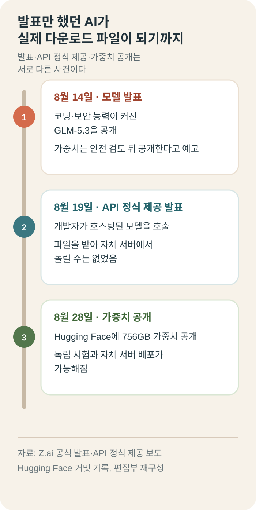
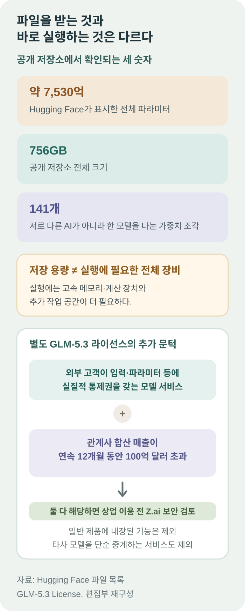

해킹 능력이 예상보다 빨리 커진 중국 AI, 2주 미룬 756GB 모델 파일을 공개했다
중국 AI 기업 Z.ai가 8월 28일 GLM-5.3의 모델 가중치를 Hugging Face에 공개했다. 약 7,530억 개의 파라미터를 담은 756GB짜리 모델이 141개 가중치 조각으로 나뉘어 실제 다운로드 가능한 상태가 됐다.
GLM-5.3은 중국의 즈푸AI가 해외에서 쓰는 브랜드인 Z.ai가 만든 코딩·AI 에이전트용 모델이다. 많은 코드와 문서를 읽고 여러 단계를 거쳐 일을 처리하도록 훈련됐다. 이름을 처음 듣는 독자라면 “중국 기업이 만든 초대형 업무용 AI”라고 이해하면 된다.
일반 챗봇처럼 질문에 답하는 데도 쓸 수 있지만, 주된 관심은 복잡한 개발 업무다. 여러 파일에 흩어진 오류를 찾거나, 프로그램을 고친 뒤 시험하고, 보안상 약한 부분을 찾아내는 일을 한 흐름으로 이어가는 능력을 겨냥했다.
가장 크게 달라진 것은 사용 방식이다. 공개 가중치가 나오기 전에는 일반 사용자가 Z.ai나 제휴사가 운영하는 호스팅 서비스를 통해 모델을 사용해야 했다. 이제 충분한 장비가 있는 연구소나 기업은 공식 모델 파일을 직접 보관하고 자기 서버에서 시험할 수 있다.
예를 들어 외부 인터넷으로 내보내기 어려운 회사 소스 코드가 있다면, 자체 서버 안에 모델을 설치해 분석하는 선택을 검토할 수 있다. 호스팅 사업자가 API 가격이나 사용량 한도를 바꿔도 이미 내려받은 동일 체크포인트를 자체 장비에서 계속 시험할 수 있다. 자체 장비 비용과 라이선스 의무는 별도다.
이번 공개는 새 모델을 처음 발표한 사건이 아니다. Z.ai는 8월 14일 모델을 발표했고, 8월 19일에는 GLM-5.3 API의 정식 제공을 발표했다. 당시 모델 파일은 공개하지 않은 채 안전성 평가와 보강이 끝나면 약 2주 뒤 가중치를 풀겠다고 예고했다.

756GB 파일이 공개됐다는 것은 무슨 뜻일까
가중치는 AI가 학습하면서 만든 수많은 숫자의 묶음이다. 사람의 뇌에 비유하면 질문 속 단어를 무엇과 연결하고 어떤 답을 내놓을지 정하는 기억과 판단 규칙에 가깝다. 파일을 받는다는 것은 그 규칙을 회사 서버 밖으로 옮길 수 있다는 뜻이다.
Hugging Face의 파일 목록은 저장소 전체 크기를 756GB로 표시한다. 파일 이름은 model-00001-of-00141.safetensors에서 시작한다. 여기서 141은 서로 다른 AI가 141개라는 뜻이 아니라, 너무 큰 모델 하나를 내려받고 여러 장비에 나눠 올리기 쉽도록 141개 조각으로 쪼갰다는 뜻이다.
141개 조각은 거대한 체크포인트를 파일 단위로 관리하고 여러 계산 장치에 나눠 올리기 위한 것이다. 한 조각만 받아 작은 모델처럼 쓸 수 있는 구조는 아니며, 전체 모델을 실행하려면 시스템 전체에서 141개 가중치 조각이 모두 필요하다.
Hugging Face가 현재 공개 파일에서 계산해 표시한 모델 규모는 753B, 한국식으로 약 7,530억 파라미터다.
공식 설정 파일에는 가중치 일부를 작은 숫자로 줄여 저장하는 FP8 방식이 적혀 있다. 그래서 이번 파일을 학습 당시의 완전한 정밀도를 그대로 담은 “원본”이라고 부르면 부정확하다. Z.ai가 공식 배포한 실행용 가중치라고 표현하는 편이 맞다.
756GB는 저장 용량일 뿐, 실행에 필요한 장비 전체를 뜻하지 않는다. 1TB 저장장치에 파일을 넣을 수 있어도 그것만으로 AI가 돌아가지는 않는다. 가중치를 올릴 고속 메모리와 계산 장치, 긴 문장을 처리할 추가 작업 공간이 더 필요하므로 일반 노트북에 내려받아 바로 쓰는 모델은 아니다.
쉽게 말하면 756GB는 창고에 쌓아 둘 상자의 크기다. 실제 일을 시작하려면 상자를 빠르게 펼칠 작업대와 여러 사람이 동시에 계산할 장비가 필요하다. 저장장치가 넉넉하다는 사실만 보고 “내 컴퓨터에서도 돌아간다”고 판단하면 안 되는 이유다.
가중치가 공개됐다고 학습 데이터와 제작 과정까지 모두 공개된 것도 아니다. 누구나 같은 모델을 처음부터 다시 만들 수 있다는 뜻과는 다르다. 가장 정확한 표현은 “완전한 오픈소스”보다 “가중치를 내려받아 실행·수정·검증할 수 있는 오픈웨이트 모델”이다.
그래도 검증 범위는 크게 넓어진다. 연구자는 같은 질문을 반복해 답이 얼마나 흔들리는지 볼 수 있고, 기업은 한국어 문서와 자체 코드를 넣어 실제 오류율을 잴 수 있다. 저장 용량을 더 줄인 양자화판이나 업무에 맞춘 수정판을 만드는 것도 라이선스 범위 안에서 가능하다.
왜 파일 공개를 약 2주 늦췄을까
Z.ai는 GLM-5.3이 이전 GLM-5.2와 같은 기초 모델을 쓰고, 이후 코딩과 장기 작업, 사이버 보안 문제를 더 훈련한 버전이라고 설명했다. 이 추가 훈련 과정에서 취약점을 찾고 공격 단계를 연결하는 능력이 예상보다 빨리 커졌다는 것이 회사 설명이다.
Axios도 공개 연기를 별도로 보도했다. API로만 제공할 때는 Z.ai가 위험한 요청을 감지하거나 계정을 막을 수 있다. 반면 모델 파일을 받은 사용자가 자기 서버에서 돌리면 회사가 그 복사본을 원격으로 끌 수 없다. 그래서 공개 전 안전 평가가 더 중요해졌다.
그렇다고 GLM-5.3이 실제 기업을 마음대로 해킹했다는 뜻은 아니다. Z.ai가 공개한 수치는 정해진 취약점과 코드를 통제된 시험장에서 풀게 한 결과다. 회사 평가에서 CyberGym 점수는 77.2에서 84.5로, ExploitBench는 24.4에서 54.4로 올랐지만 제3자가 같은 조건으로 재현한 결론은 아직 충분하지 않다.
보안 능력은 칼처럼 양쪽으로 쓰인다. 공격자는 오래된 결함을 더 빨리 찾는 데 이용할 수 있지만, 소프트웨어 관리자는 사람이 놓친 약점을 먼저 찾아 고치는 데 쓸 수 있다. 모델 이름만 보고 공격용 또는 방어용이라고 정할 수 없고, 누가 어떤 권한을 주고 어디에서 실행하느냐가 결과를 가른다.
Artificial Analysis의 독립 API 평가는 GLM-5.3에 종합지수 60을 매기면서 답변이 평균보다 길고 출력 속도는 다소 느리다고 봤다. 이 평가는 모델의 전반적인 추론 능력을 비교한 것이지 Z.ai의 사이버 보안 점수를 그대로 재검증한 시험은 아니다.
따라서 이번 사건의 핵심은 “세계 최고의 해킹 AI가 풀렸다”가 아니다. 회사 설명만 읽던 단계에서 외부 연구자가 같은 모델을 받아 성능과 위험을 직접 측정할 수 있는 단계로 넘어갔다는 점이다.
외부 검증은 숫자 하나를 다시 계산하는 데서 끝나지 않는다. 위험한 요청을 거절하는지, 우회 표현에는 어떻게 반응하는지, 취약점을 찾은 뒤 실제 공격 명령까지 만드는지 단계별로 확인해야 한다. 공개 직후에는 이런 독립 결과가 충분히 쌓이지 않았으므로 단정적인 평가는 이르다.
MIT가 아니라 별도의 GLM-5.3 라이선스다
GLM-5.3은 이전 버전처럼 MIT 라이선스를 쓰지 않는다. 별도의 GLM-5.3 라이선스는 일반적으로 사용·복사·수정·배포·판매를 허용하지만, 저작권과 라이선스 문구를 보존하고 법률을 지켜야 한다.
추가 문턱은 초대형 모델 서비스 사업자에게 있다. 외부 고객에게 모델 추론이나 미세조정 서비스를 제공하면서 관계사 합산 매출이 연속 12개월 동안 100억 달러를 넘는 기업은 상업 이용 전에 Z.ai의 보안 검토를 통과해야 한다. 두 조건이 함께 맞아야 하므로 단순히 매출이 큰 일반 기업에 자동 적용되는 조항은 아니다.
다만 모델이 특정 기능 안에만 들어간 최종 사용자 제품과, 다른 사업자가 호스팅한 모델로 요청을 단순 전달하는 서비스는 이 라이선스의 모델 서비스 정의에서 제외된다.
개인 개발자와 대부분의 일반 기업이 아예 쓰지 못한다는 뜻은 아니다. 반대로 MIT처럼 저작권 문구만 지키면 거의 끝나는 조건도 아니다. 대형 클라우드나 모델 API 회사라면 기술 시험보다 먼저 법무·보안팀이 자신이 ‘모델 서비스 사업자’에 해당하는지 확인해야 한다.

한국 기업과 개발자에게 무엇이 달라질까
민감한 소스 코드를 외부 API로 보내기 어려운 한국 기업에는 선택지가 하나 늘었다. 충분한 서버가 있다면 내부망에 모델을 두고 한국어 코드 검토, 긴 문서 분석, 보안 취약점 찾기를 직접 시험할 수 있다. 대학과 보안 연구기관도 회사의 허락을 기다리지 않고 같은 버전을 반복 평가할 수 있다.
도입 여부는 공개 성능표보다 자사 업무로 판단하는 편이 낫다. 정답을 알고 있는 코드 오류와 계약서 질문을 각각 수십 개 준비한 뒤, 정확도뿐 아니라 답이 오는 시간, 사람이 고친 양, 서버 비용을 함께 재야 한다. 중국어와 영어 점수가 높아도 한국어 숫자 단위와 높임말까지 정확하다는 보장은 없다.
대신 책임도 함께 이동한다. 처음부터 외부 인터넷, 실제 서버 명령, 비밀키와 고객 데이터 접근 권한을 열어 주면 안 된다. 읽기 전용 코드와 격리된 시험 환경에서 시작하고, 모델이 제안한 취약점은 사람이 재현한 뒤 정식 신고 절차를 따라야 한다.
공개 저장소는 이후에도 설명이나 파일이 바뀔 수 있다. 기업이 시험할 때는 모델 이름만 기록하지 말고 내려받은 날짜, 커밋 번호, 파일 해시를 함께 남겨야 한다. 그래야 나중에 결과가 달라졌을 때 모델이 바뀐 것인지 실행 환경이 바뀐 것인지 구분할 수 있다.
이번 공개의 핵심은 “중국 해킹 AI가 풀렸다”가 아니다. 보안 능력이 예상보다 빨리 커져 공개가 미뤄졌던 거대한 중국 AI가 실제 다운로드 가능한 파일이 됐고, 이제 회사 밖에서 성능과 위험을 검증할 시간이 시작됐다는 것이다.